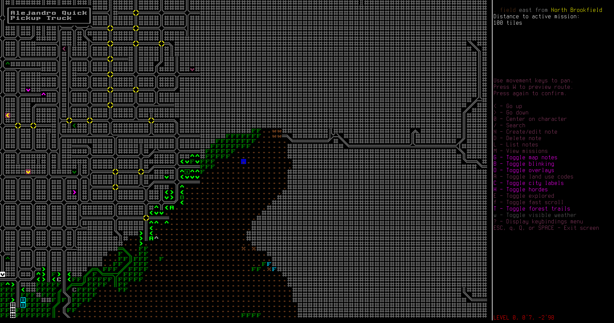
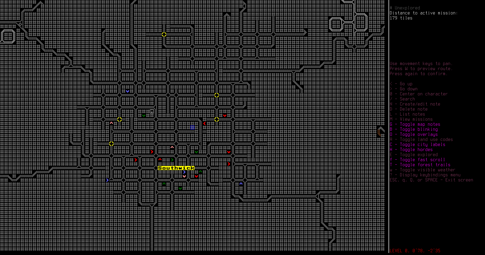
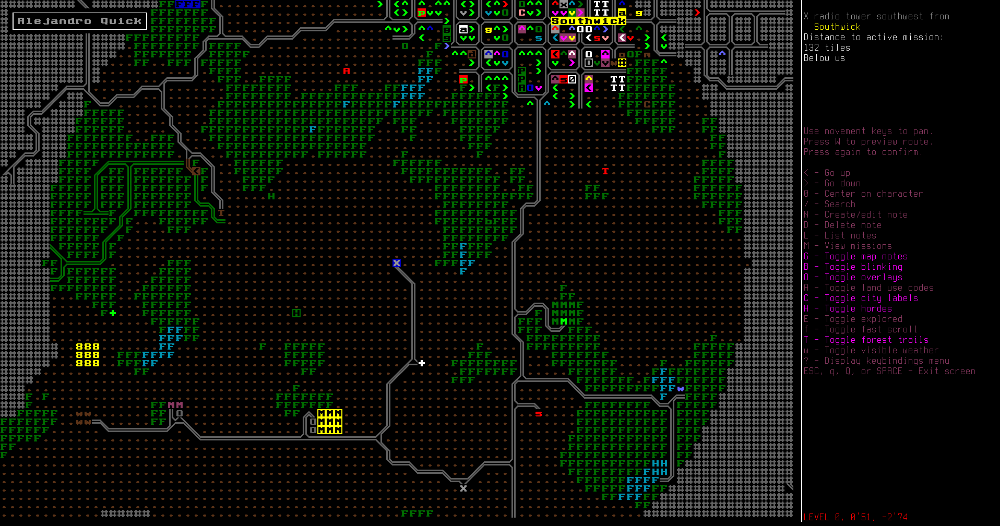
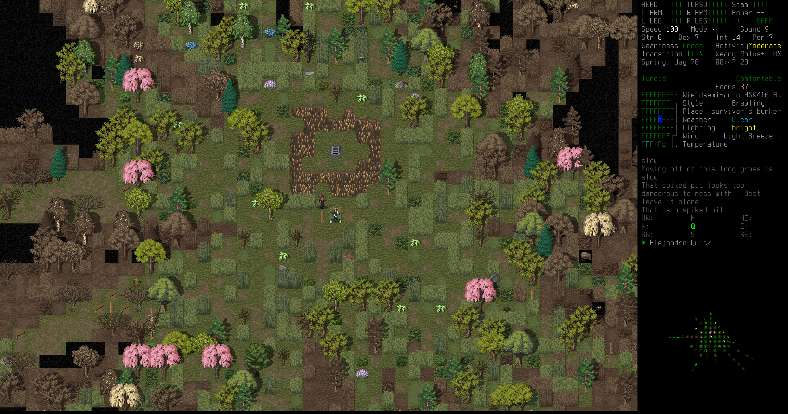
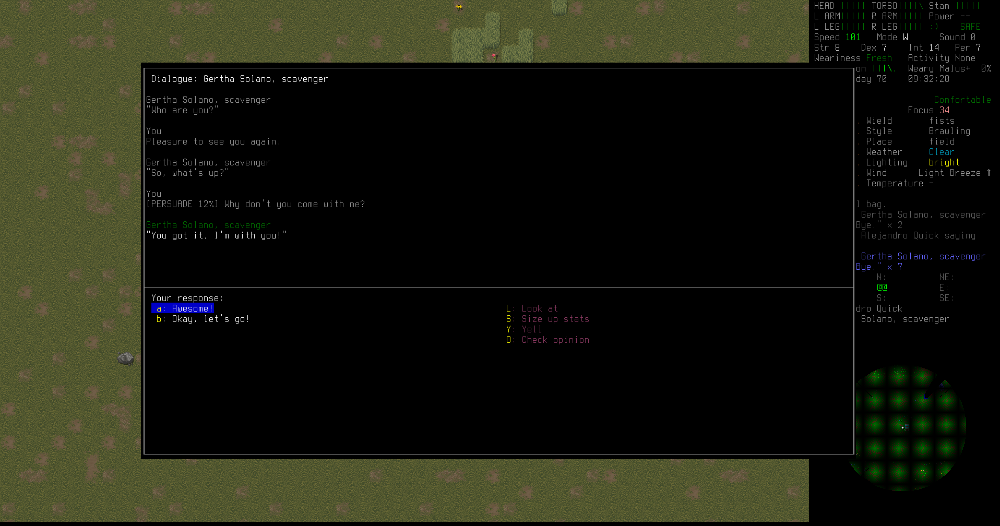
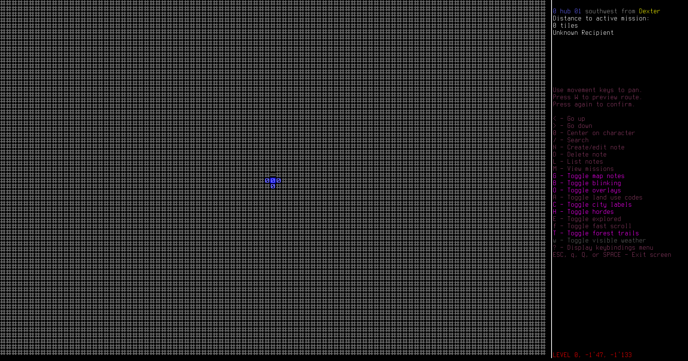
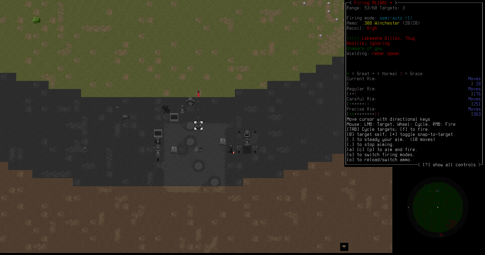
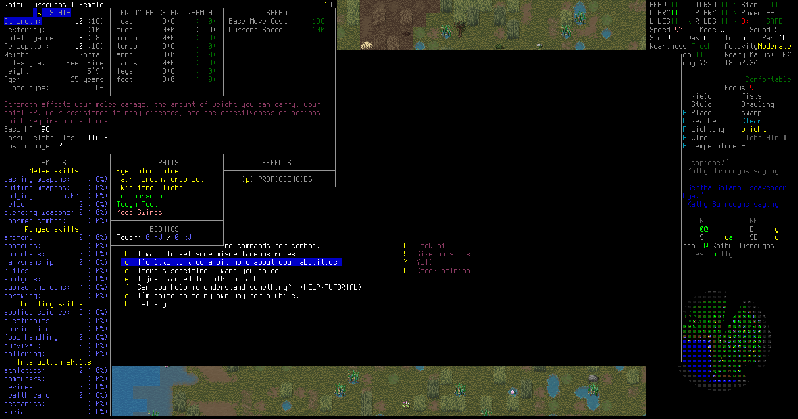
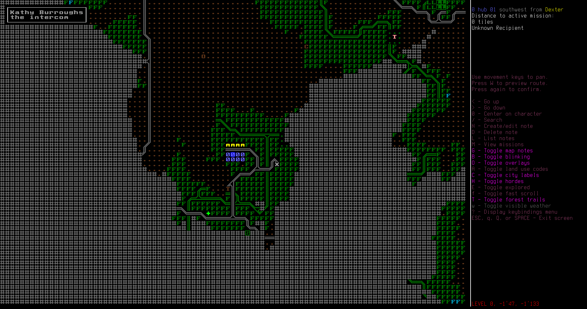
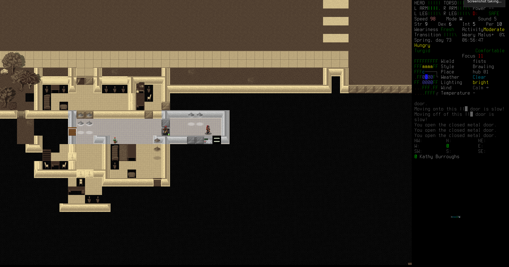

Before any high-level raiding, Erik wants more allies and resources. There is no more postal service or Amazon, so he goes exploring with Alejandro Quick.
Up around the big city should be rich pickings.

There's an armored car along the side of the road with two turrets mounted on top. Erik and Alejandro pull over beside it and strip out the turrets for later.

Erik and Alejandro tear through a horde of zombies with 5.56 NATO rounds as they raid another evacuation shelter.
Reading a map they found on one of the zombie's body, Erik learns about another city to the north-east. This's one's smaller, but no less dense.
Erik climbs a radio tower to survey the surrounding area. There's plenty of useful stores in the city, and some interesting features in the countryside.
He and Alejandro come across a survivor's bunker surrounded by spiked pits. They don't have any way to get across, so they leave it, but maybe there was something good in there, or even a survivor!
As they drive across a field, they come across a survivor: a scavenger. She's tough-looking, and Erik decides to recruit her into the cult.
She accepts! Gertha Solano joins the team!


Gertha packs up her makeshift camp and joins them in the back of the truck as they head to base to get Gertha geared up and settled in.

Gertha inheirits Erik's position of primary explorer, and gets decked out with gear and weapons. Unlike Erik, she doesn't care about fashion, so she sticks on a sturdy duster and Kevlar vest to be ready for any combat.

With three people in the cult now, Erik decides to set up a camp outside the bunker.

On an exploration trip in one of the Southwick houses, Gertha finds a gun basement with plenty of guns and ammunition. She uses a heavy crowbar to smash apart the ammunition safes.
Later, Erik drives them to the refugee center, where they learn about some kind of scientific hub left after the apocalypse.
It's very far to the south, but the refugee leader wants them to deliver a packet of data.
Before that, Gertha takes their sniper rifle between the pickup seats and takes out a camp of bandits from range.

Those bandits weren't even dangerous. Not since Gertha had a rifle that powerful.

While driving down toward the scientific hub, they spot signs of life in a little swamp shack.
It's another person! Kathy Burroughs, another survivor, agrees to join the gang. She's in excellent physical condition, even stronger than Gertha, so she'll be a valuable asset on the exploration team.

While raiding a bandit cabin, Gertha engages in close quarters rifle combat. She hides out of sign, training her aim on doorways, and when a hapless bandit charges out she guns him down with no more than a squeeze of her trigger.
Finally they reach the scientific hub, Hub 01.
There's an intercom in the main building, but nobody alive upstairs. After some back-and-forth with the person on the other side of the intercom, Erik gets enough favor to begin accepting mercenary missions and traiding.

Hub 01 trades good books, armor, weapons, and scientific items.
Hearing cries of help from a cabin on an exploration trip, Gertha and Kathy fight through a horde of zombies to rescue Domenic Driver. He agrees to join their group without Erik even present. The cult is growing.

Domenic is not very strong, but he's an unarmed combat master. In the future, perhaps, he can teach the rest of them. For now he'll be stuck on camp duty after getting geared up.
One of the Hub 01 missions left the group with an hm12 dazzle rifle, a weak but cheap laser weapon that damages even robots. Erik wants to mount it on the pickup truck with automatic targetting, so he reads plenty of books to design a turret and turret controller system.

They also retrive some broken riot control turrets that Erik shot up earlier, to strip them for parts and AI cores.

Finally Erik installs the automated laser turret on the pickup truck. This will target and destroy anything hostile it sees, and greatly improves the teams offensive and defensive power.

Next stop: a top-secret scientific lab sitting in the middle of a giant ant nest to the north-west.